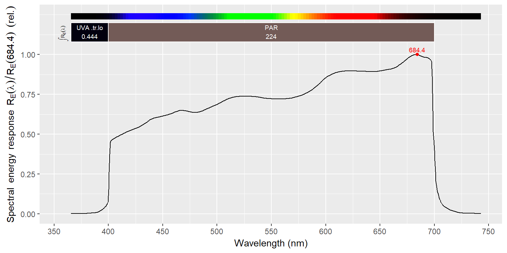
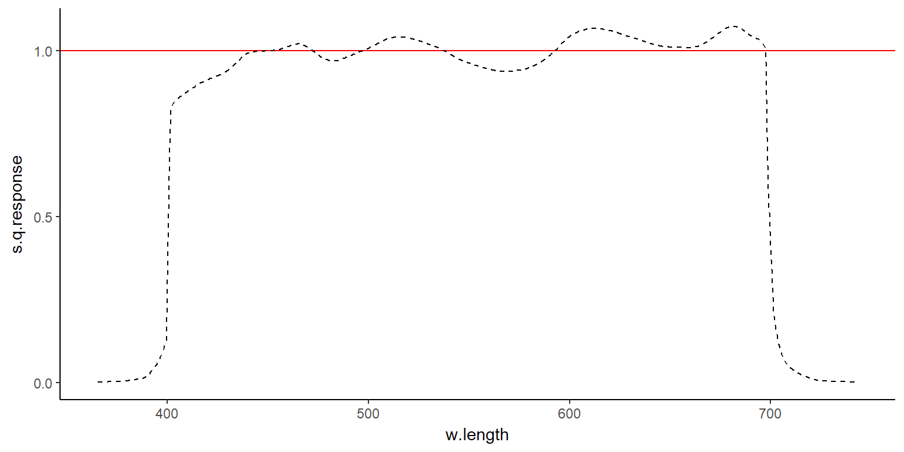

This package, is a data only package, part of a suite, which has package ‘photobiology’ at its core. Please visit (http://www.r4photobiology.info/) for more details. For more details on plotting spectra, please consult the documentation for package ‘ggspectra’, and for information on the calculation of summaries and maths operations between spectra, please, consult the documentation for package ‘photobiology’.
library(photobiology)
library(photobiologyWavebands)
library(photobiologySensors)
library(ggplot2)
library(ggspectra)In this brief User Guide we describe how to re-scale the normalized spectra, and how to access individual spectra or subsets of spectra.
Spectra in the package are contained in one collection: sensors.mspct contains spectral data for various types of broadband sensors.
In addtion to the objects containing the data itself, several character vectors of names of spectra are provide to facilitate the retrieval of subsets of spectra.
The response_spct member objects in sensors.mspct can be accessed through their names or through a numeric index. As the numeric indexes are likely to change with updates to the package, their use is discouraged. Names as character strings should be used instead. They can also be retrieved with method names().
names(sensors.mspct)## [1] "Berger_UV_Biometer" "BF5" "flat_e"
## [4] "flat_q" "CUV_5" "PQS1"
## [7] "UVS_A" "UVS_B" "UVS_E"
## [10] "LI_190" "LI_200" "LI_210"
## [13] "TOCON_blue4" "SG01D_A" "SG01D_B"
## [16] "SG01D_C" "SG01L" "SKE510"
## [19] "SKL310" "SKP210" "SKP215"
## [22] "SKR110_FR" "SKR110_R" "SKS1110"
## [25] "SKU421" "SKU421a" "SKU430a"
## [28] "SKU440a" "SL_501_high_UVA" "SL_501_low_UVA"
## [31] "SL_501_typical" "SM60" "E1c"
## [34] "BW_20"We can use a character string as index to extract an individual response_spct object.
sensors.mspct$li.190## NULLsensors.mspct[["li.190"]]## NULLBe aware that according to R’s rules, using single square brackets will return a response_mspct object possibly of length one. This statement is not equivalent to the one in the chunk immediately above.
sensors.mspct["li.190"]## $<NA>
## NULLWe can subset sensors.mspct object by indexing with vectors of character strings. The package provides some predefined ones, and users can easily define their own, either as constants or through computation. Here we use a vector defined by the package.
sensors.mspct[berger_sensors]## $Berger_UV_Biometer
## Object: response_spct [21 x 2]
## Wavelength range 279.872 to 378.458 nm, step 3.311 to 5.284 nm
## Time unit 1s
##
## # A tibble: 21 x 2
## w.length s.e.response
## <dbl> <dbl>
## 1 280 0.747
## 2 285 0.912
## 3 290 1.00
## 4 295 0.985
## 5 300 0.770
## 6 305 0.471
## 7 310 0.215
## 8 315 0.0782
## 9 320 0.0263
## 10 325 0.00845
## # ... with 11 more rowsMore generaly one can search for matching names within the collection of spectra.
sensors.mspct[grep("berger", names(sensors.mspct), ignore.case = TRUE)]## $Berger_UV_Biometer
## Object: response_spct [21 x 2]
## Wavelength range 279.872 to 378.458 nm, step 3.311 to 5.284 nm
## Time unit 1s
##
## # A tibble: 21 x 2
## w.length s.e.response
## <dbl> <dbl>
## 1 280 0.747
## 2 285 0.912
## 3 290 1.00
## 4 295 0.985
## 5 300 0.770
## 6 305 0.471
## 7 310 0.215
## 8 315 0.0782
## 9 320 0.0263
## 10 325 0.00845
## # ... with 11 more rowsSet algebra operations can be used with the indexing vectors as each vector describes a single property: color, brand, type, etc.
sensors.mspct[intersect(licor_sensors, par_sensors)]## $LI_190
## Object: response_spct [755 x 2]
## Wavelength range 365.614 to 742.99 nm, step 0.5004987 nm
## Time unit 1s
##
## # A tibble: 755 x 2
## w.length s.q.response
## <dbl> <dbl>
## 1 366 0.00181
## 2 366 0.00188
## 3 367 0.00195
## 4 367 0.00202
## 5 368 0.00209
## 6 368 0.00217
## 7 369 0.00224
## 8 369 0.00231
## 9 370 0.00238
## 10 370 0.00245
## # ... with 745 more rowsThe spectra are normalized, and consequently, several summaries expressed in absolute units are undefined, and trigger errors. Summaries like ratios which are not affected by normalization are allowed and valid. The data have been normalized as the measuring conditions used are not all the same, and in many cases not well characterized (e.g. distance to nearby reflecting walls, or exact alignment of the spectrometer input optics with respect to light sources).
What we will do in this section is to rescale the spectral data so that after conversion a given target value for a summary quantity will be true. As an example, we will rescale one spectrum so that it yields an energy irradiance of 100 W m-2 for the range 400 to 700 nm.
my.spct <- fscale(sensors.mspct$LI_190,
range = PAR(),
q_response,
target = 1
)
q_response(my.spct, PAR())## Warning in resp_spct(spct = spct, w.band = w.band, unit.out = "photon", :
## Summary calculated from rescaled data## PAR
## 1
## attr(,"time.unit")
## [1] "second"
## attr(,"radiation.unit")
## [1] "photon response total"q_response(my.spct, UVA())## Warning in resp_spct(spct = spct, w.band = w.band, unit.out = "photon", :
## Summary calculated from rescaled data## UVA.ISO.tr.lo
## 0.002772924
## attr(,"time.unit")
## [1] "second"
## attr(,"radiation.unit")
## [1] "photon response total"If we want to treat the rescaled spectral data, as if they were true readings with no scaling we can reset the attribute with method setScaled(). With method getScaled() we can test if a spectrun has been scaled.
getScaled(my.spct)## $multiplier
## [1] 0.003358371
##
## $f
## [1] "a user supplied R function"
##
## $range
## PAR
## low (nm) 400
## high (nm) 700
## weighted none
##
## $target
## [1] 1If for some obscure reason we want to simply “pretend” that the spectral data have not been normalized, we can permanently override the attribute on a copy of the data. Most of the time this is a very bad idea!
my2nd.spct <- sensors.mspct$LI_190
setNormalized(my2nd.spct)
q_response(my2nd.spct)## Total
## 300.2162
## attr(,"time.unit")
## [1] "second"
## attr(,"radiation.unit")
## [1] "photon response total"Using plot() methods for spectra defined in package ‘ggspectra’ annotated plotting is automatic. The defaults can be easily changed, please see the documentation in package ‘ggspectra’.
plot(sensors.mspct$LI_190)
Using the ggplot() method for spectra from package ‘ggspectra’ plus geometries and statistics from package ‘ggplot2’ we gain additional control on the design.
ggplot(sensors.mspct$LI_190, unit.out = "photon") +
geom_hline(yintercept = 1, colour = "red") +
geom_line(linetype = "dashed") +
scale_y_continuous(breaks = c(0, 0.5, 1)) +
theme_classic()
As source_spct is a class derived from list, and source_spct is derived from tibble::tible which is a compatible reimplementation of data.frame the data can be used very easily with any R function.
head(as.data.frame(sensors.mspct$LI_190))## w.length s.q.response
## 1 365.6140 0.001808320
## 2 366.1145 0.001879737
## 3 366.6150 0.001951153
## 4 367.1155 0.002022570
## 5 367.6160 0.002093986
## 6 368.1165 0.002165403Of course attach and with also work as expected.
attach(sensors.mspct)
q_response(LI_190, Red())## Red.ISO.tr.hi
## 94.15212
## attr(,"time.unit")
## [1] "second"
## attr(,"radiation.unit")
## [1] "photon response total"detach(sensors.mspct)attach(sensors.mspct)
with(LI_190, max(w.length))## [1] 742.99detach(sensors.mspct)with(sensors.mspct, q_response(LI_190, Red()))## Red.ISO.tr.hi
## 94.15212
## attr(,"time.unit")
## [1] "second"
## attr(,"radiation.unit")
## [1] "photon response total"